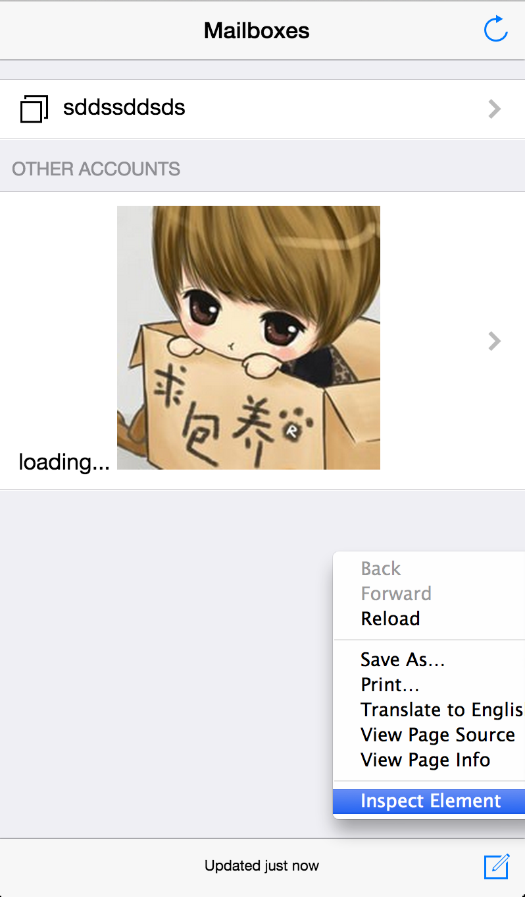

ratchet-practice
goratchet.com
它是？
它是twitter出的移动端h5框架。用于原型和快速开发。
优势
- 快速开发
- 小巧
- 和bootstrap思路相近
- 便于定制和集成
Run && Test
npm install
npm start
this will open http://0.0.0.0:8881/index.html

默认，ratchet是不支持pc浏览器的click事件的，所以我们需要【开启移动测试】

然后就可以尽情测试了。
push
原理：以数据结构【栈】的方式存放nav导航页面。
核心技术
- ajax （加载页面）
- pushstate （改变url状态）
push css
入栈
<a class="navigate-right" href="chat.html" data-transition="slide-in">
出栈
<a class="icon icon-left-nav pull-left" href="index.html" data-transition="slide-out"></a>
动画类型
data-transition是push的时候的动画
var transitionMap = {
slideIn : 'slide-out',
slideOut : 'slide-in',
fade : 'fade'
};
push js
默认不写任何js代码就可以完成push的，但是高级定制的是一定要了解每个页面入栈和出栈的生命周期的
这方面ratchet表现的很弱，但可以实现
状态切换
window.addEventListener('push', function(e){
$("#t2").show();
// alert(111);
var url = e.detail.state.url;
if(case_one(url,/chat\.html/g)){
console.log("聊天");
// init_with_chat();
}
if(case_one(url,/index\.html/g)){
console.log("首页");
// $('.content').html(index_content)
}
function case_one(url, pattern){
return (url.match(pattern)) instanceof Array;
}
});
更多见源码里的push.js，当它完成push的时候，会发送一个自定义事件push的。
手动调用
另外可以手动调用的。见源码：
window.PUSH = PUSH;
push的弊端
页面动态是非常头疼的问题，此处还是建议使用服务器端生成页面，不要ajax本地拼装，效果太差了。
推荐方案
express + jade
动态的内容，使用jade来生成，此法可根据参数以及个人信息等定制，是服务器端生成的html页面
静态页面可仍然使用html编写，放到express的public目录下
上面的2种方式可以任意组合，可以胜任各种场景。
- jade学习文档 https://github.com/i5ting/study-jade
源码分析
push state
var locationReplace = function (url) {
window.history.replaceState(null, '', '#');
window.location.replace(url);
};
ajax get
var parseXHR = function (xhr, options) {
var head;
var body;
var data = {};
var responseText = xhr.responseText;
data.url = options.url;
if (!responseText) {
return data;
}
if (/<html/i.test(responseText)) {
head = document.createElement('div');
body = document.createElement('div');
head.innerHTML = responseText.match(/<head[^>]*>([\s\S.]*)<\/head>/i)[0];
body.innerHTML = responseText.match(/<body[^>]*>([\s\S.]*)<\/body>/i)[0];
} else {
head = body = document.createElement('div');
head.innerHTML = responseText;
}
data.title = head.querySelector('title');
var text = 'innerText' in data.title ? 'innerText' : 'textContent';
data.title = data.title && data.title[text].trim();
if (options.transition) {
data = extendWithDom(data, '.content', body);
} else {
data.contents = body;
}
return data;
};
此处并没有把js加载进来，所以你不要期望在将push的页面里写函数。
所有的js代码应该最终都写在一个文件里。
push事件
当多个页面push和pop的时候，可能需要更新数据，此时需要监听push事件
window.addEventListener('push', function(e){
var url = e.detail.state.url;
if(case_one(url,/chat\.html/g)){
// alert("聊天");
init_with_chat();
}
if(case_one(url,/index\.html/g)){
// alert("首页");
// $('.content').html(index_content)
// main();
}
function case_one(url, pattern){
return (url.match(pattern)) instanceof Array;
}
});
my best practice
推荐js库
- ratchet(push,ui,css)
- zepto.js(类jq的移动端库，支持tap、手势等，兼容jquey大部分api)
- iscroll5.js（滚动效果最好的库）
- fastclick.js（增强点击转成touch的库，可定制）
- miniobj.js（js面向对象库）
- collection.js（如果移动端浏览器不支持websql，它会自动转成localstorage）
- http://scottjehl.github.io/picturefill/
ripple 模拟器
There is a command line interface that can be paired with the client (UI).
It can be used for various things, such as statically hosting an application, and running a local (cross origin) XHR proxy.
To install:
npm install -g ripple-emulator
This will install a global script called ripple. To see usage, run:
ripple help
这只是一个选择而已，待测
使用gulp task
- uglify
- watch
- livereload
- test
- coverage
服务器优化
- appcache
- mime
- zip
- 禁用etag
- ...